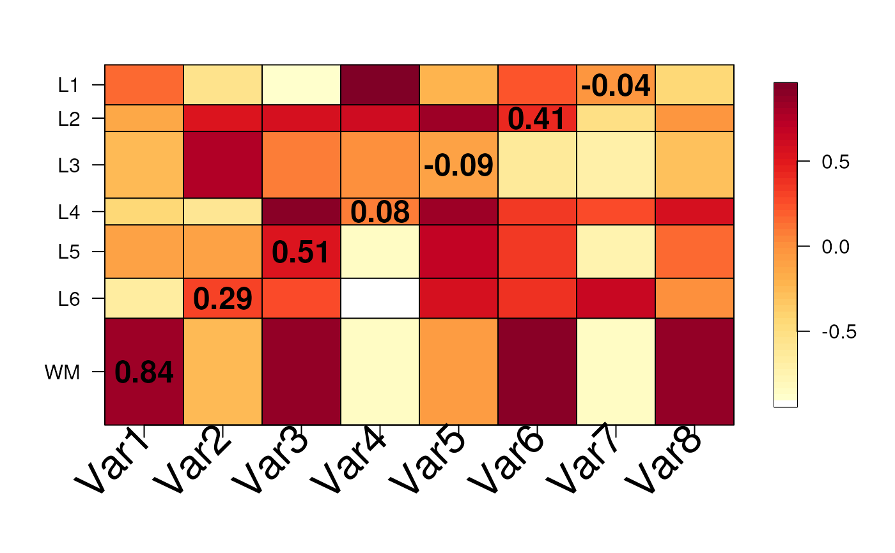
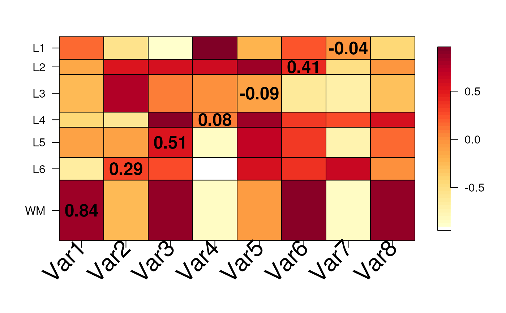

Visualize a matrix of values across human brain layers
Source:R/layer_matrix_plot.R
layer_matrix_plot.RdThis function visualizes a numerical matrix where the Y-axis represents
the human brain layers and can be adjusted to represent the length of
each brain layer. Cells can optionally have text values. This function is
used by gene_set_enrichment_plot() and layer_stat_cor_plot().
layer_matrix_plot(
matrix_values,
matrix_labels = NULL,
xlabs = NULL,
layerHeights = NULL,
mypal = c("white", (grDevices::colorRampPalette(RColorBrewer::brewer.pal(9,
"YlOrRd")))(50)),
breaks = NULL,
axis.args = NULL,
srt = 45,
mar = c(8, 4 + (max(nchar(rownames(matrix_values)))%/%3) * 0.5, 4, 2) + 0.1,
cex = 1.2
)Arguments
- matrix_values
A
matrix()with one column per set of interest and one row per layer (group) with numeric values.- matrix_labels
Optionally a character
matrix()with the same dimensions anddimnames()asmatrix_valueswith text labels for the cells.- xlabs
A vector of names in the same order and length as
colnames(matrix_values).- layerHeights
A
numeric()vector of length equal tonrow(matrix_values) + 1that starts at 0 specifying where to plot the y-axis breaks which can be used for re-creating the length of each brain layer.- mypal
A vector with the color palette to use.
- breaks
Passed to
fields::image.plot(). Used bylayer_stat_cor_plot().- axis.args
Passed to
fields::image.plot(). Used bylayer_stat_cor_plot().- srt
The angle for the x-axis labels. Used by
layer_stat_cor_plot().- mar
Passed to
graphics::par().- cex
Used for the x-axis labels and the text inside the cells.
Value
A base R plot visualizing the input matrix_values with optional
text labels for matrix_labels.
Examples
## Create some random data
set.seed(20200224)
mat <- matrix(runif(7 * 8, min = -1), nrow = 7)
rownames(mat) <- c("WM", paste0("L", rev(seq_len(6))))
colnames(mat) <- paste0("Var", seq_len(8))
## Create some text labels
mat_text <- matrix("", nrow = 7, ncol = 8, dimnames = dimnames(mat))
diag(mat_text) <- as.character(round(diag(mat), 2))
## Make the plot
layer_matrix_plot(mat, mat_text)
 ## Try to re-create the anatomical proportions of the human brain layers
layer_matrix_plot(
mat,
mat_text,
layerHeights = c(0, 40, 55, 75, 85, 110, 120, 135),
cex = 2
)

## Try to re-create the anatomical proportions of the human brain layers
layer_matrix_plot(
mat,
mat_text,
layerHeights = c(0, 40, 55, 75, 85, 110, 120, 135),
cex = 2
)
